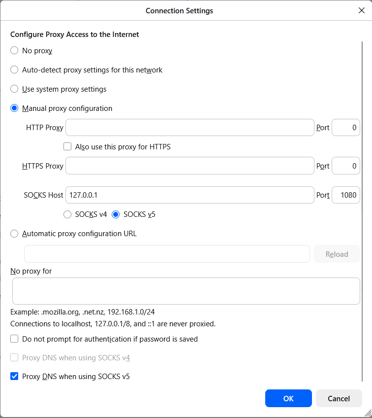
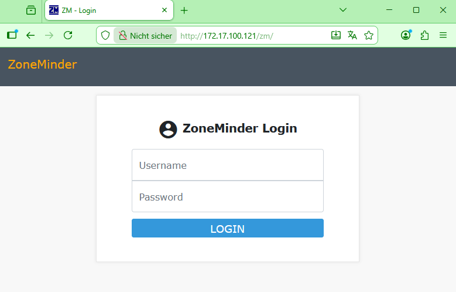

Connecting to Virtual Machines
All virtual machines in the attackbed are deployed on OpenStack/OVH and are not directly reachable
from the internet. Access is facilitated through a dedicated management host (mgmt), which
has network interfaces in all attackbed networks and is the only machine with a public IP address.
(This is the floating IP you have allocated to the OpenStack/OVH project previously and named mgmt,
which can then be used by terraform on deployment.)
The management host serves as a jump host for all other machines.
All machines are configured with the testbed key during deployment, and the Linux user is
always aecid.
Direct Access to the Management Host
ssh -i <testbed-key> aecid@<mgmt-ip>
Accessing Other Machines via Jump Host
To reach any other machine directly from your local system, use the -J (ProxyJump) flag:
ssh -i <testbed-key> -J aecid@<mgmt-ip> aecid@<target-ip>
For example, to connect to the attacker machine:
ssh -i <testbed-key> -J aecid@<mgmt-ip> aecid@192.42.1.174
SSH Config for Convenient Access
To avoid typing jump host arguments every time, add the following block to your ~/.ssh/config.
Replace <mgmt-ip> and <testbed-key> with the actual values for your project (see
replacement commands below).
Host mgmt
HostName <mgmt-ip>
User aecid
IdentityFile <testbed-key>
StrictHostKeyChecking no
UserKnownHostsFile /dev/null
Host attacker
HostName 192.42.1.174
User aecid
IdentityFile <testbed-key>
ProxyJump mgmt
StrictHostKeyChecking no
UserKnownHostsFile /dev/null
Host lanturtle
HostName 192.168.100.27
User aecid
IdentityFile <testbed-key>
ProxyJump mgmt
StrictHostKeyChecking no
UserKnownHostsFile /dev/null
Host reposerver
HostName 172.17.100.122
User aecid
IdentityFile <testbed-key>
ProxyJump mgmt
StrictHostKeyChecking no
UserKnownHostsFile /dev/null
# used in videoserver scenario
Host adminpc1
HostName 10.12.0.222
User aecid
IdentityFile <testbed-key>
ProxyJump mgmt
StrictHostKeyChecking no
UserKnownHostsFile /dev/null
# used in lateral movement scenario
Host adminpc2
HostName 10.12.0.223
User aecid
IdentityFile <testbed-key>
ProxyJump mgmt
StrictHostKeyChecking no
UserKnownHostsFile /dev/null
Host inetfw
HostName 172.17.100.254
User aecid
IdentityFile <testbed-key>
ProxyJump mgmt
StrictHostKeyChecking no
UserKnownHostsFile /dev/null
Host inetdns
HostName 192.42.2.2
User aecid
IdentityFile <testbed-key>
ProxyJump mgmt
StrictHostKeyChecking no
UserKnownHostsFile /dev/null
Host client
HostName 192.168.50.100
User aecid
IdentityFile <testbed-key>
ProxyJump mgmt
StrictHostKeyChecking no
UserKnownHostsFile /dev/null
Host linuxshare
HostName 192.168.100.23
User aecid
IdentityFile <testbed-key>
ProxyJump mgmt
StrictHostKeyChecking no
UserKnownHostsFile /dev/null
Host videoserver
HostName 172.17.100.121
User aecid
IdentityFile <testbed-key>
ProxyJump mgmt
StrictHostKeyChecking no
UserKnownHostsFile /dev/null
Host corpdns
HostName 192.42.0.233
User aecid
IdentityFile <testbed-key>
ProxyJump mgmt
StrictHostKeyChecking no
UserKnownHostsFile /dev/null
Host wazuh
HostName 192.168.100.130
User aecid
IdentityFile <testbed-key>
ProxyJump mgmt
StrictHostKeyChecking no
UserKnownHostsFile /dev/null
Replacing Placeholders with Actual Values
After copying the config, run the following two commands to substitute the placeholders with the real management host IP and path to your testbed key:
sed -i 's/<mgmt-ip>/YOUR.MGMT.IP.HERE/g' ~/.ssh/config
sed -i 's|<testbed-key>|/path/to/your/testbed-key|g' ~/.ssh/config
Replace YOUR.MGMT.IP.HERE with the actual public IP assigned to mgmt in your project, and
/path/to/your/testbed-key with the actual path to your private key file (e.g. ~/.ssh/testbed).
Usage
Once the config is in place, you can connect to any machine by name:
ssh mgmt
ssh attacker
ssh wazuh
Accessing Web Interfaces via SOCKS Proxy
Some machines in the attackbed expose web interfaces that are only reachable within the attackbed networks. To access these from a local browser without exposing them to the internet, SSH can be used to create a SOCKS proxy tunnel. A SOCKS proxy instructs your browser to route all its traffic through the SSH connection, making your browser effectively appear to be running inside the attackbed network.
The following example shows how to access the ZoneMinder video surveillance interface on
videoserver (172.17.100.121).
Setting up the Tunnel
Assuming the SSH config from the previous section is in place, run:
ssh -N -D 127.0.0.1:1080 videoserver
The -D flag opens a local SOCKS proxy on port 1080, and -N tells SSH not to execute
a remote command; the connection exists solely to forward traffic. The jump through mgmt
happens automatically as configured in ~/.ssh/config.
Configuring Firefox
Open Firefox's proxy settings via Settings → General → Network Settings → Settings... and configure it as shown below:
- Select Manual proxy configuration
- Leave HTTP Proxy and HTTPS Proxy empty
- Set SOCKS Host to
127.0.0.1and Port to1080 - Select SOCKS v5
- Check Proxy DNS when using SOCKS v5

Accessing ZoneMinder
With the tunnel running and the proxy configured, open the following URL in Firefox:
http://172.17.100.121/zm/
You will be presented with the ZoneMinder login interface:

Accessing Desktop Environments via VNC
Some machines in the attackbed have a MATE desktop environment and noVNC installed, providing a
full graphical interface. This is particularly relevant in client-side attack scenarios, where
the attacker connects to the client machine using screen sharing software, allowing you to
watch or debug the attack in real time directly from your local machine.
The noVNC role used during deployment can be found at
https://github.com/ait-testbed/atb-ansible-novnc. By default, VNC is exposed on port
5900.
Tunneling the VNC Connection
Since the machines are not directly reachable from the internet, the VNC port must be forwarded
through the management host using SSH port forwarding. The following example tunnels the VNC
port of the attacker machine to your local machine:
ssh -L 5900:192.42.1.174:5900 -J aecid@<mgmt-ip> aecid@192.42.1.174
The -L flag maps port 5900 on your local machine to port 5900 on the remote target,
routed through the mgmt jump host. Keep this SSH session open while using the VNC viewer.
Connecting with a VNC Viewer
With the tunnel running, open your VNC viewer and connect to:
vncviewer localhost:5900
You will see the live desktop of the target machine and can observe or debug the ongoing attack in real time.
Note
Some machines use a different VNC setup based on the TightVNC role at
https://github.com/ait-testbed/atb-ansible-tightvnc — for example the reposerver.
This role allows configuring a specific user, password, port, and display number during
deployment. In scenario 3, the VNC password is deliberately set to a weak value that gets
bruteforced as part of the attack. When connecting to such a machine, vncviewer will
prompt for the configured credentials:
vncviewer localhost:<port>
Enter the VNC username and password as configured in the deployment when prompted. Adjust
the port in the -L tunnel command accordingly if a non-default port was chosen.